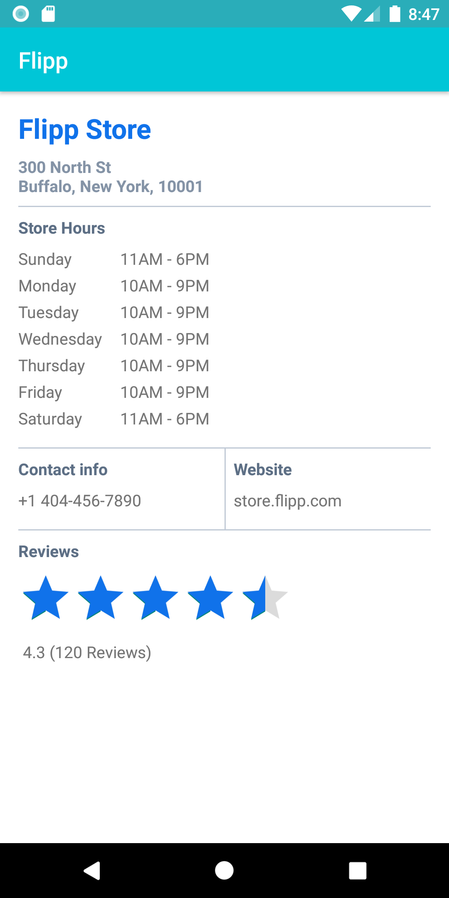

This practical codelab is the second installment of the Flipp Android Engineer Onboarding course. Other codelabs that are part of the course are as follows:
In this codelab you'll learn how to use Kotlin Coroutines in the Flipp app. Coroutines are a new way of managing background threads that can simplify code by reducing the need for callbacks. Coroutines are a Kolin feature that converts async callbacks for long-running tasks, sych as database or network access, into sequential code.
To understand and use Coroutines in a real world context, we will use it along with Retrofit, a REST client library. You will start with the feature that was built in the first codelab (Working with MVVM, LiveData and Databinding), that uses dummy data.
By the end of the codelab you will have enough experience to use coroutines and Retrofit to load data from the network, and you be able integrate coroutines into the MVVM architecture.
Additionally, we will add necessary unit tests for the ViewModel and the Repository from the first codelab as we add coroutines and implement the network layer.
ViewModel, LiveData and Repository.JUnit, Roboelectric and Mockito.Store Info feature you started in the first codelab to make a web service API request and handle the response.The starter code for this codelab can be found here.
On Android, it's essential to avoid blocking the main thread. The main thread is a single thread that handles all updates to the UI. It's also the thread that calls all click handlers and other UI callbacks. As such, it has to run smoothly to guarantee a great user experience.
Callbacks are a great pattern, however they have a few drawbacks. Code that heavily uses callbacks can become hard to read and harder to reason about. In addition, callbacks don't allow the use of some language features, such as exceptions.
Kotlin coroutines let you convert callback-based code to sequential code. Code written sequentially is typically easier to read, and can even use language features such as exceptions.
The keyword suspend is Kotlin's way of marking a function, or function type, available to coroutines. When a coroutine calls a function marked suspend, instead of blocking until that function returns like a normal function call, it suspends execution until the result is ready then it resumes where it left off with the result. While it's suspended waiting for a result, it unblocks the thread that it's running on so other functions or coroutines can run.
The pattern of async and await in other languages is based on coroutines. If you're familiar with this pattern, the suspend keyword is similar to async. However in Kotlin, await() is implicit when calling a suspend function.
Kotlin has a method Deferred.await() that is used to wait for the result from a coroutine started with the async builder.
In Kotlin, all coroutines run inside a CoroutineScope. A scope controls the lifetime of coroutines through its job. When you cancel the job of a scope, it cancels all coroutines started in that scope. On Android, you can use a scope to cancel all running coroutines when, for example, the user navigates away from an Activity or Fragment. Scopes also allow you to specify a default dispatcher. A dispatcher controls which thread runs a coroutine.
For coroutines started by the UI, it is typically correct to start them on Dispatchers.Main which is the main thread on Android. A coroutine started on Dispatchers.Main won't block the main thread while suspended. Since a ViewModel coroutine almost always updates the UI on the main thread, starting coroutines on the main thread saves you extra thread switches. A coroutine started on the Main thread can switch dispatchers any time after it's started. For example, it can use another dispatcher to parse a large JSON result off the main thread.
The AndroidX lifecycle-viewmodel-ktx library adds a CoroutineScope to ViewModels that's configured to start UI-related coroutines. The library adds a viewModelScope as an extension function of the ViewModel class. This scope is bound to Dispatchers.Main and will automatically be cancelled when the ViewModel is cleared. You can see the viewModelScope in action in the starer code for this codelab in the StoreInfoActivityViewModel class.
viewModelScope.launch {
try {
val storeInfo = repository.fetchStoreInfo(postalCode, storeName)
storeNameLiveData.postValue(storeInfo.storeName)
storeAddressLiveData.postValue(storeInfo.storeAddress)
sundayStoreHoursLiveData.postValue(storeInfo.storeHours[0])
....
} catch (e: Exception) {
_storeInfo.postValue(Error("There was an error fetching store information"))
loadingLiveData.postValue(false)
}
}
Next, you will connect to a web service with Retrofit and see coroutines in action.
dependencies section, make sure that the Retrofit libraries are present. If not add the following two lines: implementation "com.squareup.retrofit2:retrofit:$retrofit_version"
implementation "com.squareup.retrofit2:converter-moshi:$retrofit_version"Verify the latest version of the library in the Retrofit documentation.
Retrofit creates a network API for the app based on the content from the web service. It fetches data from the web service and routes it through a separate converter library that knows how to decode the data and return it in the form of useful objects. Retrofit includes built-in support for popular web data formats such as XML and JSON. Retrofit ultimately creates most of the network layer for you, including critical details such as running the requests on background threads.
The IStoreInfoApiService interface holds the network layer for the feature; that is, this is the API that your StoreInfoActivityViewModel will use to communicate with the web service. This is the class where you will implement the Retrofit service API.
IStoreInfoApiService in the package com.wishabi.flipp.app.storeinfo. Right now the file contains only one thing: a constant for the base URL for the web service. For the purpose of this codelab, you are going to be using a mock web server, that returns a static JSON response.companion object block, define a method in the interface that defines how Retrofit talks to the web server using HTTP requests. Import retorfit1.http.GET and retrofit2.Call when requested.@GET("raw")
suspend fun getStoreInfo() : StoreInfo
getStoreInfo(). To tell Retrofit what this method should do, use a @GET annotation and specify the path, or endpoint, for that web service method. In this case the endpoint is called raw(again, this is for the sake of this codelab, you will usually work with well defined endpoints with the Flipp backend). When the getStoreInfo() method is invoked, Retrofit appends the endpoint raw to the base URL, and creates a Call object. That Call object is used to start the request. However, latest versions of Retrofit do provide out of the box support for Coroutines and we can make use of this by marking these interface functions with the suspend keyword. This would make the method available for coroutines. Additionally, instead of returning a Call object, we can mark the return type as the data object. Here is the complete code for the class:interface IStoreInfoApiService {
companion object {
private const val BASE_URL = "https://karboosx.net/pastebin/81!edc132cab2819d6d59a94bc6d9a5b1f65d1a9b13/"
}
@GET("raw")
suspend fun getStoreInfo() : StoreInfo
}
Open the file RetrofitProvider in the package com.wishabi.flipp.net.retrofit, and add the following method as the last method of the class.
fun getRetrofitStoreInfoService(): IStoreInfoApiService {
val retrofit = getRetrofit(IStoreInfoApiService.BASE_URL)
return retrofit.create(IStoreInfoApiService::class.java)
}
The Retrofit create() method creates the Retrofit service itself with the IStoreInfoApiService interface. Because this call is expensive, and the app only needs one Retrofit service instance, you expose the service to the rest of the app using an in-house ServiceLocator called InjectableHelper. Now that all the setup is done, you can access this Retrofit service as follows:
val storeInfoApiService = ServiceManager.getService(RetrofitProvider::class.java).getRetrofitStoreInfoService()
Here is the complete code for the class:
@Mockable
class RetrofitProvider : InjectableHelper() {
private fun getRetrofit(baseUrl: String, secondsToTimeOut: Long = 30L): Retrofit {
val okHttpClient: OkHttpClient = OkHttpClient.Builder()
.readTimeout(secondsToTimeOut, TimeUnit.SECONDS)
.connectTimeout(secondsToTimeOut, TimeUnit.SECONDS)
.build()
val retrofitBuilder = Retrofit.Builder()
.baseUrl(baseUrl)
.client(okHttpClient)
.addConverterFactory(MoshiConverterFactory.create())
.build()
return retrofitBuilder
}
fun getRetrofitAccountsService(baseUrl: String): IAccountsRetrofitService {
val retrofit = getRetrofit(baseUrl)
return retrofit.create(IAccountsRetrofitService::class.java)
}
fun getRetrofitAppConfigService(baseUrl: String, secondsToTimeOut: Long): IAppConfigRetrofitService {
val retrofit = getRetrofit(baseUrl, secondsToTimeOut)
return retrofit.create(IAppConfigRetrofitService::class.java)
}
fun getRetrofitUserAuthService(baseUrl: String): IUserAuthService {
val retrofit = getRetrofit(baseUrl)
return retrofit.create(IUserAuthService::class.java)
}
fun getRetrofitBackFlippService(baseUrl: String): IBackFlippRetrofitService {
val retrofit = getRetrofit(baseUrl)
return retrofit.create(IBackFlippRetrofitService::class.java)
}
fun getRetrofitStoreInfoService(): IStoreInfoApiService {
val retrofit = getRetrofit(IStoreInfoApiService.BASE_URL)
return retrofit.create(IStoreInfoApiService::class.java)
}
}
Open StoreInfoRepository in the package com.wishabi.flipp.app.storeinfo. Scroll down to the fetchStoreInfo() method.
suspend fun fetchStoreInfo(postalCode: String, storeName: String): StoreInfo {
delay(3_000)
return StoreInfo(storeName = "Flipp Store",
storeAddress = "3250 Bloor St W Unit 300, Etobicoke, ON M8X 2X9",
storeHours = getStoreHours(),
storeContactNumber = "+1 416-626-7092",
storeWebsite = "store.flipp.com",
storeNumReviews = 61,
storeRating = 4.5f)
}
This is the method where you'll call the Retrofit service and handle the returned JSON string. Right now there's just a placeholder string for the response.
Delete the lines 20-27 and add the following code to call the Retrofit service.
suspend fun fetchStoreInfo(postalCode: String, storeName: String): StoreInfo {
val storeInfoApiService = ServiceManager.getService(RetrofitProvider::class.java)
.getRetrofitStoreInfoService()
return storeInfoApiService.getStoreInfo()
}
You can see the beauty of coroutines here. A flow which generally warrants a callback style interaction can now be done sequentially making it less verbose and more readable.
Delete the getStoreHours() method that you had added previously to return dummy data.
Here is the complete code for the class:
class StoreInfoRepository : InjectableHelper() {
suspend fun fetchStoreInfo(postalCode: String, storeName: String): StoreInfo {
val storeInfoApiService = ServiceManager.getService(RetrofitProvider::class.java)
.getRetrofitStoreInfoService()
return storeInfoApiService.getStoreInfo()
}
}
A sample entry of the JSON response you get from the web service looks something like this:
{
"storeName": "Flipp Store",
"storeAddress": "3250 Bloor St W Unit 300, Etobicoke, ON M8X 2X9",
"storeHours": [
"11AM - 6PM",
"10AM - 8PM",
"10AM - 8PM",
"10AM - 8PM",
"10AM - 8PM",
"10AM - 8PM",
"10AM - 9PM"
],
"storeContactNumber": "+1 416-626-7092",
"storeWebsite": "store.flipp.com",
"storeNumReviews": 61,
"storeRating": 4.5
}
In the example above, notice that as part of each StoreInfo response has these JSON key and value pairs:
storeName: Name of the storestoreAddress: Address of the storestoreHours: An array of store hours for each day of the week starting from SundaystoreContactNumber: Contact number of the storestoreWebstie: Website of the storestoreNumReviews: Number of reviews a store hasstoreRating: Rating of the storeMoshi parses this JSON data and converts it into an Kotlin object. To do this, it needs to have a Kotlin data class to store the parsed results, so the next step is to convert our existing data class to support Moshi.
Open StoreInfo class in the package com.wishabi.flipp.app.storeinfo. Notice that each of the variables in the StoreInfo class corresponds to a key name in the JSON object. However, sometimes you will have to name the variables different to the JSON keys, to support this, you can replace the storeName key with the line shown below. Import com.squareup.moshi.Json when requested.
@Json(name = "storeName") val storeName: String
To use variable names in your data class that differ from the key names in the JSON response, use the @Json annotation.
Here is the complete code for this class:
data class StoreInfo(@Json(name = "storeName") val storeName: String,
val storeAddress: String,
val storeHours: List<String>,
val storeContactNumber: String,
val storeWebsite: String,
val storeRating: Float,
val storeNumReviews: Int)
Compile and run the app. Now you should see the following screen after following the below steps:
View Store Info menu option.You should now see the StoreInfoActivity.

The final solution for this codelab can be found here.
Kotlin documentation:
Retrofit documentation: